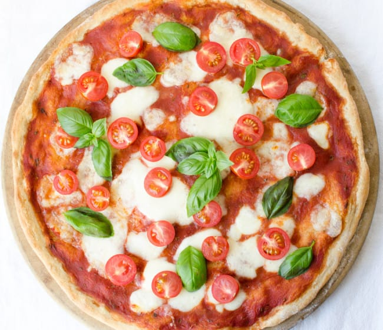

Margherita Pizza

Photo and recipe from: VERYEATALIAN
Description:
Margherita pizza has been one of my favorite kinds of pizza, so a good recipe for one is something I have been looking for!
This margherita pizza recipe will make a beautiful pizza with a crunchy crust, a chewy texture, and a delicious flavor. This recipe even adds some cherry tomatoes to go with it, which adds this sweet and tangy flavor that I really like.
Ingredients:
- 200 g (7 oz) finely milled Italian flour (Tipo “00”) or all-purpose flour
- 50 g (1.8 oz) whole wheat flour
- 150 ml (5 oz) lukewarm water
- 3.5 gr (1/2 packet) active dry yeast
- 1 tsp sugar
- 1/2 tsp salt + 1/2 tsp salt for the sauce
- 200 ml (6.7 oz) unsalted strained tomatoes — the best quality you can find
- A sprinkle of dry oregano
- 200 g (7 oz) mozzarella cheese (ovoline or bocconcini), drained and shredded — the best quality you can find
- 10 cherry tomatoes, halved
- 10-12 basil leaves
Steps/Instructions:
- Dissolve yeast and sugar in a glass of lukewarm water. Sift the flour in a medium-sized bowl and add the yeast/water/sugar mixture in it. Work the dough with your hands and knead until all ingredients are well incorporated. Add salt.
- Take the dough onto a clean work surface and start kneading until it reaches a soft, elastic, and smooth texture. Take the dough and bang it on the work surface, about 6-7 times. Form the dough into a ball and place it in a bowl, covered with a clean dishtowel. Let it rest for 2 hours in a dry place.
- While the dough is resting, prepare the tomato sauce by combining the strained tomatoes with 1/2 tsp of salt, 1 tsp of sugar and a sprinkle of oregano.
- After the dough has rested, turn oven to 450°F. Dust the pizza stone generously with flour. Take the dough, form a small disk with your hands and start pulling out the sides, stretching it until it covers the whole pizza stone [do not overwork it!]
- Spread the tomato sauce on the pizza dough with a spoon, leaving an edge for the crust. Bake for about 8 minutes.
- Remove pizza from the oven, sprinkle the shredded mozzarella on top and bake pizza for 6 more minutes.
- Remove from the oven and add cherry tomato halves, cut side-up. Bake for 2 more minutes, until the mozzarella is lightly brown-colored and the crust is golden.
- Remove pizza from the oven. Add fresh basil leaves on top and let it sit for about 5 minutes before serving.
Bon Appétit!
Go to Home Page